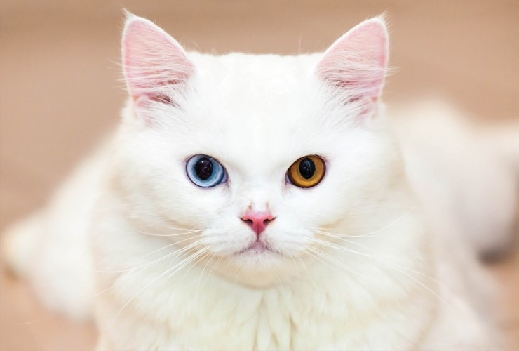

홍채 이색증은 홍채 세포의 DNA 이상으로 멜라닌 색소 농도 차이 때문에 생기는 현상이다. 홍채의 과다색소침착과 과소색소침착에서 비롯되며 선천적으로 나타나는 경우가 96%, 주로 백인에게 나타난다. 한국인 오드아이도 있다.영상 후천적으로 나타나는 경우는 외상[2]이나 녹내장 치료를 위한 약물치료 때문에 생기는 것인데, 홍채색이 변질될 정도로 안구손상이 심하다는 뜻이므로 시력에 악영향을 끼치는 경우가 많다. 개중에는 색이 변한 쪽 시력을 잃는 경우도 드물지 않다. 선천적으로 나타난 사람은 시각 이상이 없다. 오드아이 고양이는 청각 장애가 있는 경우가 많지만 사람은 정상 청각이 대부분이다. 바르덴부르크 증후군(Waardenburg syndrome)의 증상 중 하나다. 이 증후군은 모발, 피부, 안구의 색소 변환이 특징인 유전 질환으로 백인이 아닌 인종이 파란눈이라면 이 증후군일 확률이 높다. 이 증후군의 다른 특징으로는 청각 장애, 앞이 막힌 짧은 눈, 넓은 미간, 독특한 T존의 생김새 등이 있다. 인간의 경우 동물과 달리 희귀하다. 신체적으로 별다른 이상은 없는 걸로 보고된다.
인간의 경우 판타지나 설화 같은 데서 이런 눈을 지닌 사람은 특별한 능력이 있다는 식으로 서술된다. 눈색깔 유전자 풀이 한정적인 유색인종의 경우 한쪽 눈은 진한 갈색이고 한쪽은 그보다 조금 옅은 갈색이라든지 하는 작은 채도차를 보이는 경우가 많지만 백인, 혼혈인 중엔 한쪽은 진한 갈색이고 한쪽은 파란색인 오드아이를 가진 경우도 있다. 서양인은 0.06%정도가 오드아이가 있다고 하며 동양인의 경우 매우 희귀하다. 페이스북 그룹중 하나인 진혹거(진실 혹은 거짓)에서 파생된 그룹 중 하나인 진혹거 겟잇뷰티 그룹에서 2016년 3월 1일에 한 멤버가 한쪽 눈이 파란색인 오드아이를 가진 것을 보여준 사진을 올렸다. 선천적으로 오드아이를 가졌으나 원인은 불명 홍채 전체가 아닌 일부가 변색되는 경우도 있다. 이를 따로 '홍채 얼룩증(파이아이)'이라고 하며, 이런 색의 홍채를 띠는 대표적인 인물로 3Blue1Brown이 있다. 자세한 내용은 해당 문서 참고.